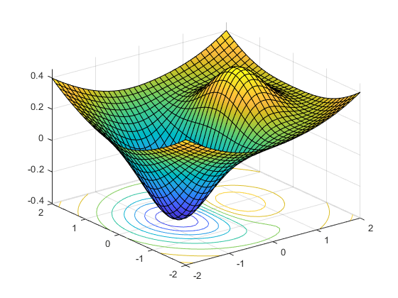

Optimization Project with Autodoc using Sphinx¶
This is a template for a simple optimization project
{kind=link}
How to run the library¶
Create an input data instance from a json file:
from opti_suite.opti_app.factory.model_data_factory import ModelDataFactorydata = ModelDataFactory.create_from_json_file(input_json=<file-path-to-json-input>)Create and instance of the optimization engine with the input data and execute:
from opti_suite.opti_app.model.engine import Engineengine = Engine(data=data)engine.execute()Get the response in json format:
json_response = engine.generate_json_response()
Engine¶
-
class
opti_suite.opti_app.model.engine.Engine(data: opti_suite.opti_app.context.model_data.ModelData)[source]¶ This class defines the LocalSolver engine for build and solve the optimization problemAttributes:
status :
Status of the optimization execution.model :
Instance of the optimization model.data :
A ModelData data instance.response :
A ModelResponse data instance.results :
Optimization model resultsMethods:
execute :
Run DataAnalyzer with the instance DataModel, build the model, solve the model and build model response.get_response :
Get the ModelResponse instance generated with the ModelResponseFactory with solution of saved in ModelData.generate_json_response :
Get the json response with the solution.generate_excel_response :
Get the excel response with the solution.generate_solver_factory
Generate solver factory based on the solver choosehas_solution
Check if the solver founded a solution and the quality of the solution-
execute(verbosity: bool = False, solver: str = 'cbc', opt_parameters: dict = None)[source]¶ This method trigger the engine optimization module.Arguments :
verbosity :
Verbosity of engine (by default True).solver :
Solver to be used (string).opt_parameters :
Dictionary with the solver parameters.
-
generate_excel_report(filename: str) → None[source]¶ Generate the response of the planning engine for the logistic problem in Excel format- Arguments:
- output_filename:
(str, optional): Path of the response file.
-
generate_json_response(output_filename: str = None, rounded: bool = True) → dict[source]¶ Generate the response of the planning engine for the logistic problem in json format- Arguments:
- output_filename:
(str, optional): Path of the response file.
rounded:
(bool, optional): If True, all the values will be rounded.
Returns:
json_response:
dict: Response of the planning engine for the logistic problem in json format if the output_filename param is not provided. Otherwise, None.
-
generate_solver_factory(solver: str, opt_parameters: dict) → <pyomo.opt.base.solvers.SolverFactoryClass object at 0x000001A24B2B8700>[source]¶ Configure the internal solver and its parameters.- Arguments:
- solver :
(str): Name of the internal solver.
opt_parameters:
(dict): Parameters for the internal solver.- Returns:
opt:
pyo.SolverFactory: A pyo.SolverFactory class instance with the configuration of the internal solver.
-
Model Data¶
-
class
opti_suite.opti_app.context.model_data.ModelData[source]¶ This class defines the data class ModelData for the optimization library. It contains the structures of input data for the optimization problem, loaded from the input request as well as the solution data.Attributes:
workers :
Dataframe with the input data for unit workers.periods :
Dataframe with the input data planning periods.shifts :
Dictionary with the time periods for each shift.shifts_list :
List of shifts.configuration :
Configuration parameters (dataframe).solution_schedules_worker :
Dictionary with the schedule solution of workers.solution_necessary_worker :
Dictionary with the scheduled workers.Methods:
set_configuration
set_workers
set_periods
set_shifts
set_shifts_ids
add_solution_scheduled_worker
add_solution_needed_worker
get_configuration
get_config_parameter
get_workers
get_periods
get_shifts
get_shifts_ids
get_solution_scheduled_workers
get_solution_needed_worker
Model Response¶
-
class
opti_suite.opti_app.context.model_response.ModelResponse[source]¶ This class defines the ModelResponse data class with the response of the optimization engine.
Attributes:
schedule :
DataFrame that contains the schedule solution.Methods:
set_schedule :
Define the schedule data frame.get_schedule :
Return the schedule data frame.
Exception¶
Model Data Factory¶
-
class
opti_suite.opti_app.factory.model_data_factory.ModelDataFactory(request)[source]¶ This class processes the input raw data and creates a ModelData which provides access to all the available data.Attributes:
data :
A ModelData instance.request :
Input raw data - json file format.Methods:
create :
Execute the internal methods to generate a ModelData instance from the input request.create_from_json_file :
Execute the internal methods to generate a ModelData instance from an input json file request.
Model Response Factory¶
-
class
opti_suite.opti_app.factory.model_response_factory.ModelResponseFactory(data: opti_suite.opti_app.context.model_data.ModelData)[source]¶ This class processes the solution raw data and creates the Response instance (engine response).Attributes:
data :
The ModelData instance that contains the solution data.response :
The response of the optimization engine.Methods:
create :
Execute the private methods to build the solution.